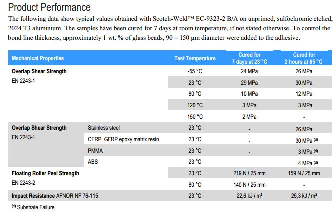

3M™ Scotch-Weld™ Structural Epoxy Adhesive9323-2 B/A is a thixotropic, sag-resistant, two component epoxy adhesive whichcures at room temperature or with mild heat to form a tough, impact resistantstructural bond.
It has an excellent adhesion to a widevariety of substrates such as metals, glass, ceramics and plastics, incl. GFRPand CFRP. Once cured it provides very high shear and peel strength over a widetemperature range, with excellent resistance to harsh environments andchemicals commonly encountered in aerospace applications.
Features
• Thixotropic,non- sag, full room temperature processable.
• Availablein duo-pack cartridge for easy and best processing.
• Toughenedsystem providing very high shear and peel strength.
• Excellentenvironmental resistance.
